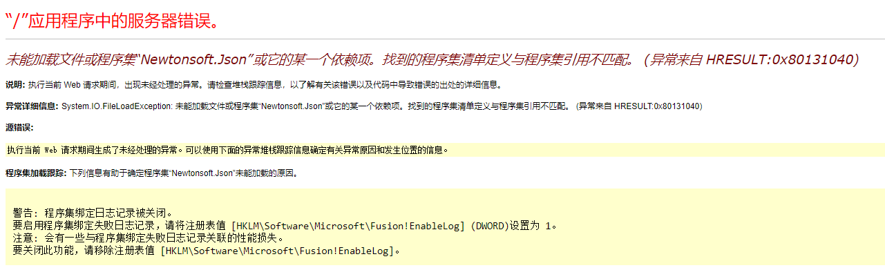
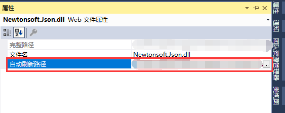

 如上图所示，一般这种问题都是dll版本和配置文件中的dll版本对应不上才引起的，可以通过替换对应版本的dll或者修改配置文件中的版本号即可。 然而我的情况是：修复后，还是不定时出现这样的问题，我以为是被这个dll诅咒了，起初是真的没啥办法完全根治，出现问题后，只能覆盖。 后来查看了下dll的属性，原来还有“自动刷新路径”这么一项，如下图所示：  所以，这才是诅咒的根源，让我们施展自己的魔法将它根除。